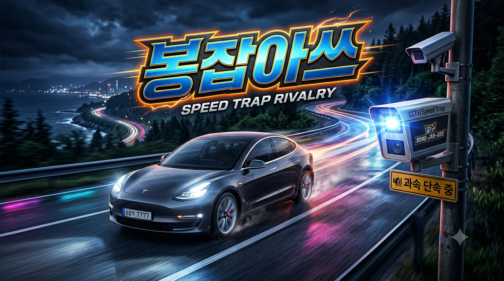

TRAFFIC ENFORCEMENT

과속 차량을 정확한 순간에 촬영하세요
SCORE0
SPEED LIMIT80 km/h
CAMERA READY
BEST0
VEHICLE SPEED0km/h
PLATE---
봉잡아쓰 교통단속센터
과속 단속 결과
CAM-01
자동 무인단속 촬영자료 · 게임 내 가상 통지서
단속 촬영자료
위반 차량MODEL 3
차량 번호---
측정 속도0 km/h
제한 속도0 km/h
촬영 정확도--
단속선 통과 시점의 촬영자료를 기준으로 위반 여부를 판정합니다.
촬영 SPACE 카메라 화면 버튼 정확한 타이밍으로 높은 점수